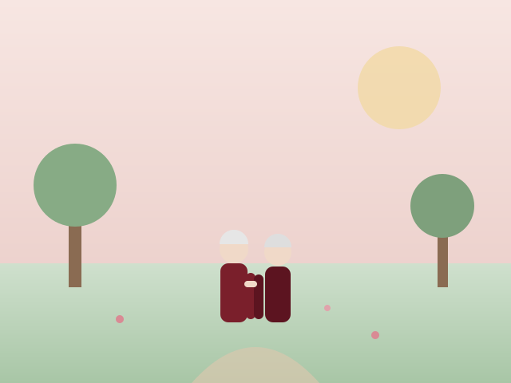
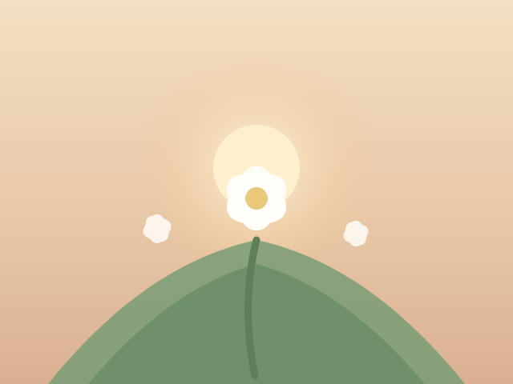

Sambutan
Tiga puluh tahun. Angka itu terdengar seperti hitungan yang biasa, sampai kita sadar bahwa di dalamnya ada ribuan hari kecil yang tak pernah masuk buku sejarah — sarapan yang sama, kali ke-berapa menyalakan kompor, kali ke-berapa menyalakan lampu tidur, kali ke-berapa membatalkan rencana demi rencana lain yang lebih sederhana.
Kami menulis halaman ini bukan untuk merangkum tiga puluh tahun, karena mustahil. Kami menulisnya untuk satu hal yang ingin kami katakan sebelum angka itu berlalu: terima kasih, Papa & Mama, sudah memilih untuk tetap bersama — bukan karena tidak ada pilihan lain, melainkan karena kalian masih memilih satu sama lain setiap pagi.
Ini bukan biografi. Ini ucapan dari anak yang tumbuh di rumah yang kalian bangun, dengan tangan yang kalian pegang, dan dengan contoh yang kalian berikan tanpa pernah mengatakannya. Tiga puluh tahun bukan angka yang kami hitung, melainkan jumlah malam yang kalian pilih untuk tetap bersama.
Sambutan singkat
Tiga puluh tahun berisi ribuan hari kecil: sarapan jam yang sama, tawa setelah perdebatan, dan tangan yang tetap tenang.
Semuanya bermula pada 5 Oktober 1996 di Malang, lalu berlanjut dengan hal-hal biasa yang membuat rumah terasa seperti rumah.
Ini kumpulan ucapan dari yang dekat maupun yang jauh. Papa & Mama, ini untuk kalian.
00000
hari · jam · menit
Perjalanan kami
Lima tonggak yang kami ingat, karena yang lain terlalu banyak untuk ditulis.
-
Tahun pertama
Sarapan pertama di Malang terasa seperti piknik yang terlalu khidmat — sebab kami belum punya meja, belum punya kursi, tapi sudah punya satu sama lain.
-
Tahun kelima
Pindah ke [Kota Domisili], membawa sedikit barang dan banyak rencana.
-
Tahun ke-7
Satu rumah kecil, satu anak kecil, satu kucing yang datang sendiri dan menolak pergi. Hidup terasa sempurna justru karena tidak sempurna.
-
Tahun ke-15
Anak mulai sekolah, rutinitas mulai panjang. Kami belajar bahwa cinta yang panjang bukan yang paling raya, melainkan yang paling sabar.
-
Tahun ke-30
Kembali ke Malang, satu foto, tiga puluh tahun dalam satu bingkai. Wajah berubah, cengkeraman tidak.
Galeri
Tiga bingkai kenangan yang kami simpan dari tiga puluh tahun bersama.
-

Dua orang, satu arah
-
Cengkeraman yang tak pernah longgar
-

Usia yang panjang
Dari kami untuk Papa & Mama
Ucapan yang kami kumpulkan, seadanya dan dari hati.
-
Yuli
Anak
Papa, Mama — terima kasih sudah menjadi rumah pertama yang paling aman. Aku belajar apa arti dewasa dari cara kalian berdua menyelesaikan masalah tanpa suara keras. Tiga puluh tahun kalian bersama adalah tiga puluh tahun aku belajar bahwa cinta itu nyata, bukan dari kata-kata, tapi dari kebiasaan kecil yang kalian ulang setiap hari. Selamat anniversary, Papa & Mama. Aku bangga jadi anak kalian.
-
Adik
Anak
Kalau aku mengingat masa kecil, aku mengingat pelukan kalian berdua — yang satu hangat, yang lain kuat. Sampai kapan pun, aku tahu dari mana aku datang dan ke mana aku bisa pulang. Selamat 30 tahun, Papa & Mama.
-
Keluarga Besar
Keluarga
Dari kalian berdua kami belajar bahwa cinta bukan hal besar, tapi kebiasaan kecil yang diulang setiap hari. Tiga puluh tahun kalian adalah tiga puluh tahun pelajaran untuk kami semua.
Kutipan
Tiga puluh tahun bukan angka yang kami hitung, melainkan jumlah malam yang kami pilih untuk tetap bersama.